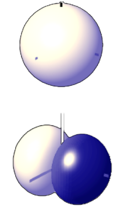

class: center, middle .title[Interactive Music Systems] <br/><br/> .subtitle[Interactive spatialisation] <br/><br/><br/><br/><br/><br/> .date[Nov 2022] <br/><br/><br/> .note[Created with [Liminal](https://github.com/jonathanlilly/liminal) using [Remark.js](http://remarkjs.com/) + [Markdown](https://github.com/adam-p/markdown-here/wiki/Markdown-Cheatsheet) + [KaTeX](https://katex.org)] ??? Author: Grigore Burloiu, UNATC --- name: toc class: left # ★ Table of Contents ★ <!-- omit in toc --> 1. [Strategies](#strategies) 2. [Multichannel audio](#multichannel-audio) 3. [Ambisonics](#ambisonics) 4. [Ircam Spat](#ircam-spat) 5. [Assignment](#assignment) <!-- Comment out the next slide if you don't want the Table of Contents link --> --- layout: true .toc[[★](#toc)] --- class: center ## Sound *is* spatial <iframe width="100%" height="500" src="https://www.youtube.com/embed/cl7kDj9NZEo" title="YouTube video player" frameborder="0" allow="accelerometer; autoplay; clipboard-write; encrypted-media; gyroscope; picture-in-picture" allowfullscreen></iframe> --- class: center ## Sound *is* spatial <iframe width="100%" height="500" src="https://www.youtube.com/embed/OQE5TYnD58k?start=755" title="YouTube video player" frameborder="0" allow="accelerometer; autoplay; clipboard-write; encrypted-media; gyroscope; picture-in-picture" allowfullscreen></iframe> --- name: strategies # Strategies speaker as source | live diffusion | fixed channel | object-based -|-|-|- | | | <br/><br/><br/><br/> - credit: Trond Lossius / SMC 2016 workshop --- name: multichannel-audio # Multichannel audio `MC` in Max <iframe width="100%" src="https://www.youtube.com/embed/Y4YLy7kqcr8" title="YouTube video player" frameborder="0" allow="accelerometer; autoplay; clipboard-write; encrypted-media; gyroscope; picture-in-picture" allowfullscreen></iframe> -- in M4L - `[plugout 1 2 3 4 5 6]` <iframe width="100%" src="https://www.youtube.com/embed/jDyAHp-fopw" title="YouTube video player" frameborder="0" allow="accelerometer; autoplay; clipboard-write; encrypted-media; gyroscope; picture-in-picture" allowfullscreen></iframe> --- ## Multichannel standards | **speakers** | **medium** | **sweet spot?** -|-----------------|--------|----------- **5.1 etc** | fixed | audio | yes [**Ambisonics**](https://www.aes.org/e-lib/online/browse.cfm?elib=5417) | variable | audio | yes [**VBAP**](https://www.aes.org/e-lib/browse.cfm?elib=7853) | variable | metadata | yes [**WFS**](https://asa.scitation.org/doi/abs/10.1121/1.405852) | many | metadata | no -- [many more](https://forum.ircam.fr/projects/detail/spat/) --- ## VBAP <img src="../attachments/vbap.png"> [Max package](https://github.com/nwolek/vbap) (N Wolek) [M4L device](https://maxforlive.com/library/device/5187/vbap-doppler-panner) (Z Loumakis) --- name: ambisonics # Ambisonics <span style="color:lightcoral">coding</span> + <span style="color:aqua">decoding</span> technology - storage, processing, rendering source <span style="color:lightcoral">→</span> B-format signal <span style="color:aqua">→</span> speakers -- features - spatial compositions are stored as a multichannel audio file - (no other metadata required) - creation is abstracted from playback - *loudspeaker-agnostic* - *full-sphere* & *isotropic* - (sounds from all directions are treated similarly) - all speakers contribute to any sound - stable image - (doesn’t vary a lot w/ listening position. Sweet spot still exists tho.) --- class: center ## mid-side  --- class: center ## B-format (1st order) <img width="66%" src="../attachments/ambi2.png"> --- class: center ## B-format --- class: center ## B-format --- ## B-format: number of channels used **order** | **0** | **1** | **2** | **3** | **4** | **5** | **...** ------|---|---|---|---|---|---|--- **3D** | 1 | 4 | 9 | 16 | 25 | 36 | etc **2D** | 1 | 3 | 5 | 7 | 9 | 11 | etc | mono | FOA | HOA | TOA | HOA | HOA | HOA -- why *HOA*? -- --- class: center ## *FOA* use cases --- ## Ambisonics tools [ambisonic.net](http://www.ambisonic.net/) [ambisonic toolkit](http://www.ambisonictoolkit.net/) [icst-ambisonics](https://ambisonics.ch/) + [Max externals](https://www.zhdk.ch/forschung/icst/software-downloads-5379/downloads-ambisonics-externals-for-maxmsp-5381) [HoaLibrary](http://hoalibrary.mshparisnord.fr/en) [ambiX](http://www.matthiaskronlachner.com/?p=2015) --- ## Ambisonics in Reaper: ATK [documentation](http://www.ambisonictoolkit.net/documentation/reaper/) .left-column[ <div style="padding:56.25% 0 0 0;position:relative;"><iframe src="https://player.vimeo.com/video/119335710?h=0325eb236e&color=ffffff&title=0&byline=0&portrait=0" style="position:absolute;top:0;left:0;width:100%;height:100%;" frameborder="0" allow="autoplay; fullscreen; picture-in-picture" allowfullscreen></iframe></div><script src="https://player.vimeo.com/api/player.js"></script> ] .right-column[ <iframe width="100%" height="200" src="https://www.youtube.com/embed/_da97ALqAY4" title="YouTube video player" frameborder="0" allow="accelerometer; autoplay; clipboard-write; encrypted-media; gyroscope; picture-in-picture" allowfullscreen></iframe> ] --- ## Ambisonics in Max: ICST defining and storing trajectories - `[ambicontrol]` - methods: `rotate`, `random` - trajectory: `record`, `close`, `start`, `loop 1`, … - manually - `[line]`, `[random]`, `[drunk]` etc to generate values - `[mtr]` to record/play - external automation - OSC in M4L - OSC VST: [ToscA](https://forum.ircam.fr/projects/detail/tosca/) - other OSC sequencers or code --- name: ircam-spat # Ircam Spat .left-column[ [ambisonics + VBAP + kNN + much more](https://forum.ircam.fr/projects/detail/spat/) ] .right-column[ - [win install](https://forum.ircam.fr/projects/detail/spat/): - dll files → `/support/` <!-- --> ] --- name: more-m4l-tools ## More M4L tools Manuel Poletti / Cycling74 - [Spat for Live](https://forum.ircam.fr/projects/detail/forummaxapps2-spat5/) - [Audio Routes](https://maxforlive.com/library/device.php?id=5830) ([howto](https://cycling74.com/articles/audio-routings-a-new-system-for-multi-channel-routing-in-ableton-live)) others - [xp4l](https://www.xp4l.com/) - [E4L by Envelop](https://www.envelop.us/software) - [...](https://youtu.be/mv8hsbqTbXM) .left-column[ <iframe width="100%" src="https://www.youtube.com/embed/XkAOawQ1Lpw" title="YouTube video player" frameborder="0" allow="accelerometer; autoplay; clipboard-write; encrypted-media; gyroscope; picture-in-picture" allowfullscreen></iframe> ] .right-column[ <iframe width="100%" src="https://www.youtube.com/embed/cbInMDH0oyw" title="YouTube video player" frameborder="0" allow="accelerometer; autoplay; clipboard-write; encrypted-media; gyroscope; picture-in-picture" allowfullscreen></iframe> ] --- # Assignment Reading: [Spat + Antescofo](https://creaa.unistra.fr/websites/gream/Activites/Colloque_JIM_2020_-_Pre-actes_-_BABOURI_Nadir.pdf) paper